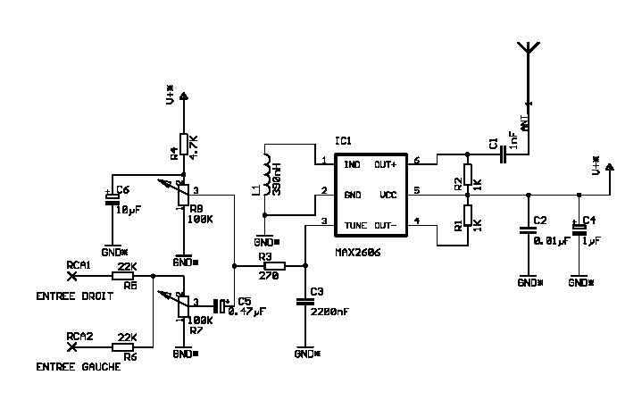

La Hi-Fi partout chez soi : Émetteur MAX2606
Réaliser un émetteur FM à composant unique grâce à la famille MAX260X de Maxim.[cite: 42]
I.1 Introduction
La famille des MAX260X est grande. Elle commence avec le MAX2605 et se termine avec le MAX2609.[cite: 42] Ils ont tous le même brochage et permettent de réaliser un émetteur à circuit unique.[cite: 42] Ce qui les différencie, c'est leur gamme de fréquence, qui s'étend de 45MHz à 650MHz.[cite: 42]
I.2 Description du MAX2606
Le MAX260X se présente sous la forme d'un boîtier SOT23-6.[cite: 42] Il est alimenté entre 2.7V et 5.5V, avec une très faible consommation (1.9mA à 3.9mA).[cite: 42] La fréquence centrale du VCO est déterminée par la valeur de la self connectée entre les broches 1 et 2 (IND et Masse).[cite: 42]
La broche TUNE est connectée à une diode Varicap intégrée, permettant de faire varier la fréquence centrale avec une tension comprise entre +0.4V et +2.4V.[cite: 42]
I.3 Application : Émetteur FM 88MHz - 108MHz

Ce montage vous permettra d'écouter votre musique préférée dans votre jardin ou sur l'autoradio de votre véhicule.[cite: 42] L'oscillateur est ajusté par le potentiomètre R8, et sa fréquence nominale (100MHz) est fixée par une self de 390nH.[cite: 42]
La puissance de sortie (environ -21dBm dans 50O) est suffisante pour un usage domestique avec une antenne de 75cm, tout en respectant la réglementation.[cite: 42] Les signaux audio gauche/droite sont additionnés par R5 et R6 pour moduler le VCO via l'entrée TUNE.[cite: 42]